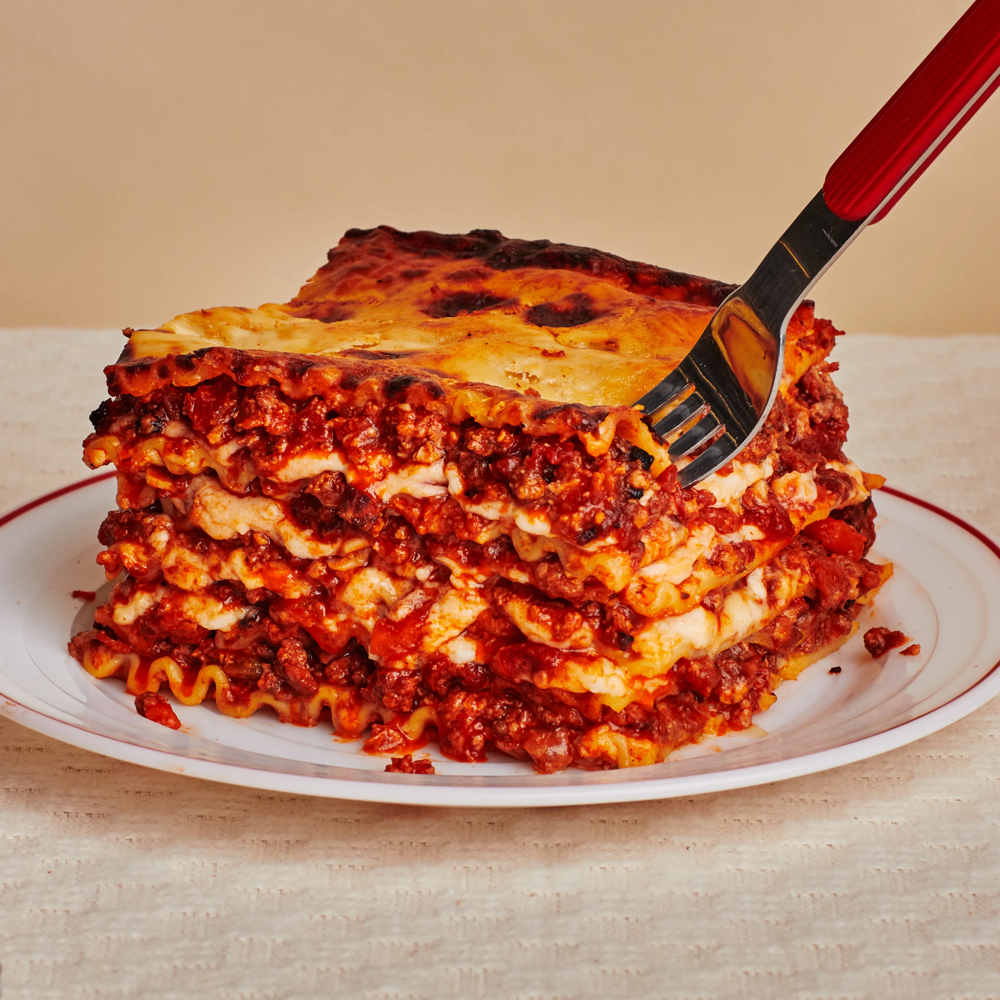

Return Home
Lasagna Recipe

Lasagna is a classic Italian dish made with layers of pasta, rich meat or vegetable sauce, creamy béchamel, and melted cheese, baked to perfection.
Ingredients:
- Meat: This lasagna recipe starts with a pound of ground meat (½ pound ground pork, ½ pound lean ground beef).
- Onion: A diced onion is cooked until translucent with the ground meat.
- Canned tomatoes: You'll need a can of tomato sauce and a can of crushed tomatoes.
- Fresh herbs: For fresh flavor, chop two tablespoons of parsley and crush one clove of garlic.
- Sugar: A dash of sugar balances out all of the acidity from the tomatoes.
- Spices and seasonings: This homemade lasagna is seasoned with dried basil, dried oregano, salt, and black pepper.
- Noodles: Of course, you'll need lasagna noodles! This recipe calls for uncooked noodles, but you can use the oven-ready variety to save time.
- Cheese: The cheese layer is made up of cottage cheese and Parmesan. You'll also need shredded mozzarella.
- Eggs: Eggs make the cheese layer extra creamy. Plus, they act as a binding agent (which means they hold the layer together).
Steps: